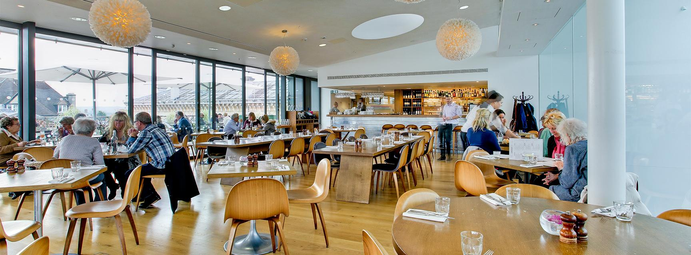

The Haukai Restaurant is based in the Bay of Islands and offers a wide range of foods, specialising in Maori food. The dinner menu features both Maori and Pakeha food and drink options. Along with the fantastic food, they also offer a first-hand experience with te ao Maori with the use of karakia for blessing food.
